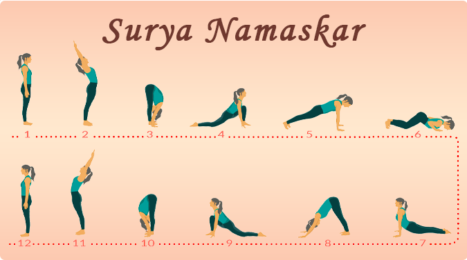
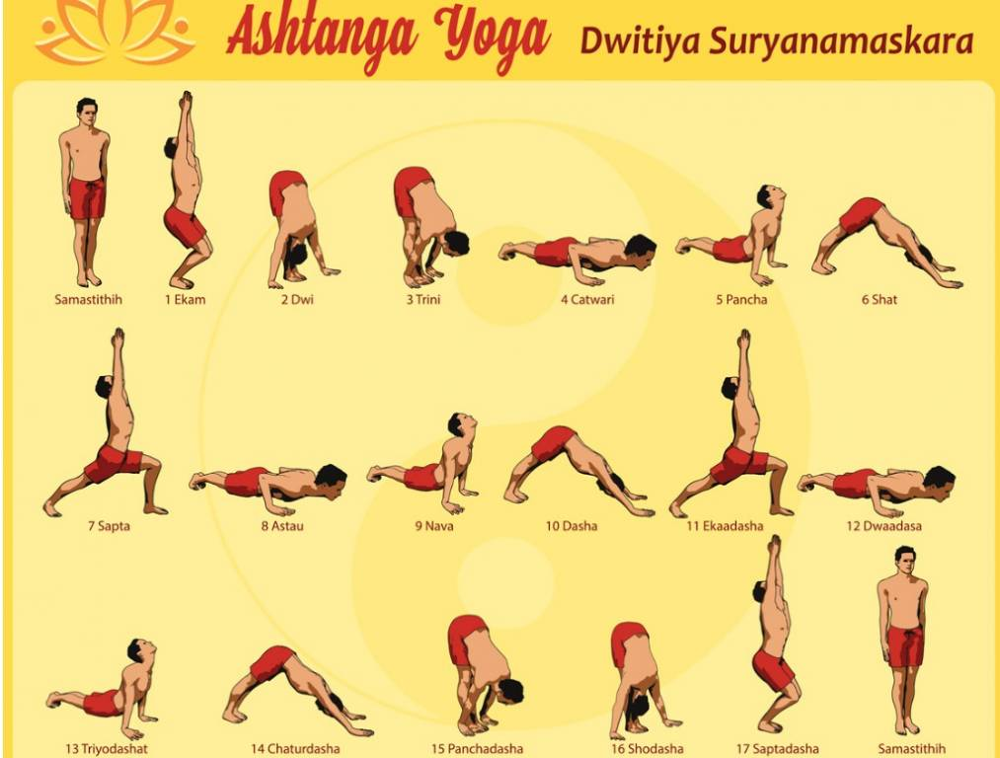
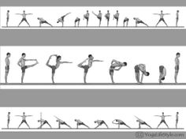

Benefits of YOGA :
Yoga offers a wide range of physical, mental, and emotional benefits. Here
are some key benefits of practicing yoga:
1. Improved Flexibility: Regular practice of yoga helps increase flexibility by
stretching and lengthening muscles.
2. Enhanced Strength: Many yoga poses require body weight resistance, promoting strength
and muscle tone.
3. Better Posture: Yoga encourages awareness of body alignment, leading to improved
posture and reduced strain on the spine.
4. Stress Reduction: The combination of deep breathing and mindfulness in yoga can help
reduce stress levels and promote relaxation.
5. Increased Energy Levels: Yoga practices, especially dynamic forms, can boost energy
and vitality by improving circulation and oxygenating the body.
6. Balanced Metabolism: Certain yoga practices can stimulate and balance the endocrine
system, supporting a healthy metabolism.
7. Improved Respiratory Function: Yogic breathing exercises, known as pranayama, enhance
lung capacity and improve respiratory efficiency.
8. Enhanced Circulation: Yoga poses and movements increase blood flow, promoting better
circulation and cardiovascular health.
9. Mind-Body Connection: Yoga emphasizes the connection between the mind and body,
fostering greater self-awareness and mindfulness.
10. Pain Relief: Yoga can be beneficial for relieving chronic pain conditions, such as
lower back pain or arthritis, by improving flexibility and strength.
It's important to note that individual experiences may vary, and the benefits of yoga
can be influenced by factors such as the style of yoga practiced, the frequency of practice,
and the individual's health condition.

TYPES OF YOGA
Yoga is a diverse and ancient practice that encompasses various styles
and approaches.
Different types of yoga focus on different aspects of physical, mental, and spiritual well-being
1.Suryanamaskaar: "Surya Namaskar," also known as Sun Salutation, is a yoga practice that involves a sequence of postures performed in a flowing manner. The term "Surya Namaskar" is derived from two Sanskrit words: "Surya," meaning the sun, and "Namaskar," meaning salutation or greeting.

2.Ashtanga Yoga: Ashtanga is a structured style of yoga that follows a specific sequence of postures and is similar to Vinyasa in its focus on breath and movement. It is a more intense and physically demanding practice.

3.Anusara Yoga: Anusara combines a strong emphasis on proper alignment with a positive and uplifting philosophy. It is known for its heart-opening poses and focus on the celebration.
